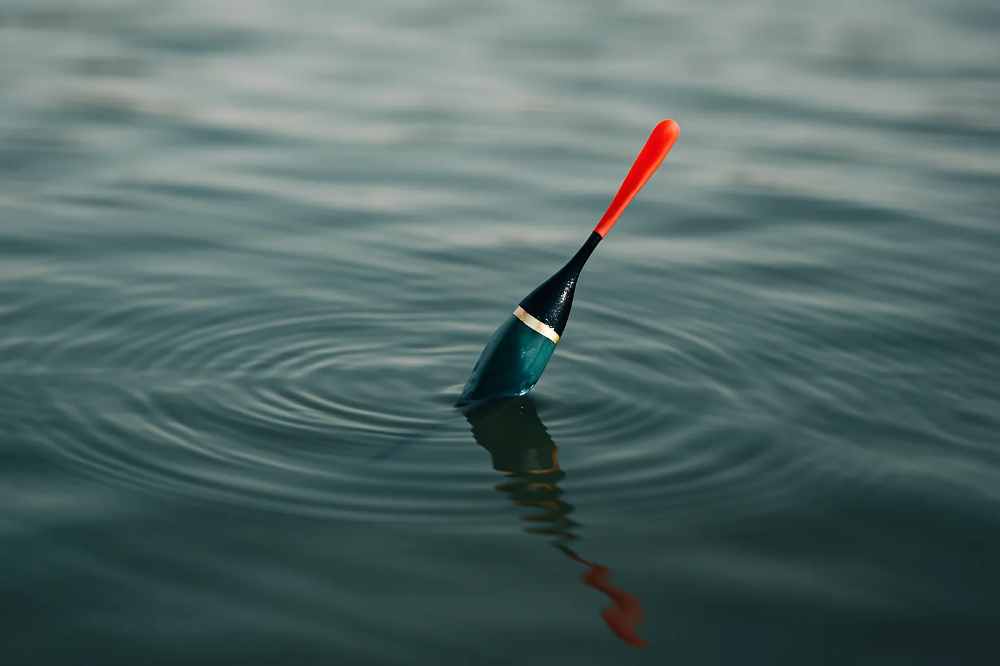
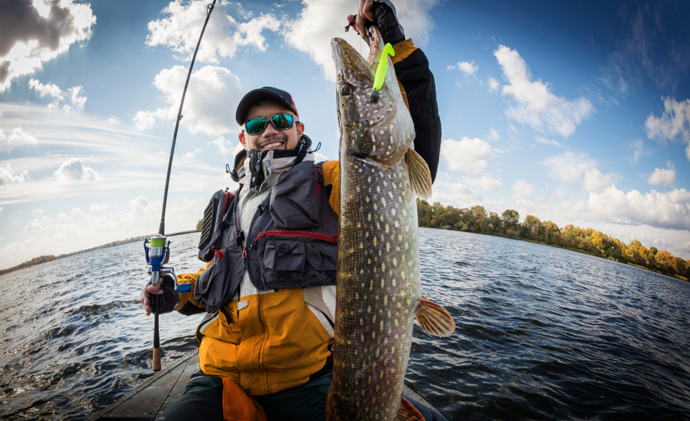
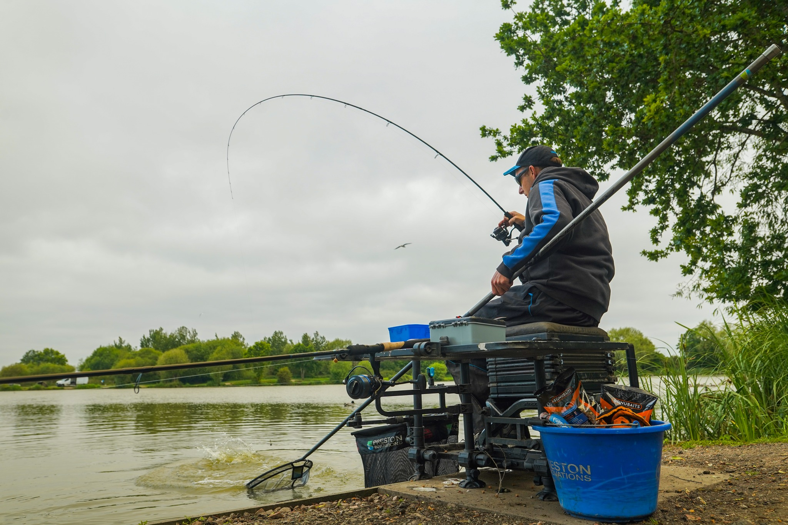

Tehnici de pescuit
Pescuitul la plută
Este o tehnică accesibilă, ideală pentru începători, folosind momeală naturală.Pescuitul la pluta este o metodă clasică și fină de pescuit, ce folosește o plută ușoară pentru a indica mișcările subtile ale pestelui (trăsăturile), permitând pescarului să interacționeze direct cu momeala, fie ea peștişori, insecte, pâine sau porumb, în ape calme, lacuri sau râuri lente, fiind o experiență intimă, satisfăcătoare, ideală pentru începători și pentru speciile de talie mică spre medie, precum caras, oblete sau platică. Principiul: Pluta plutește la suprafață, iar când un pește mușcă momeala, aceasta se scufundă (trăsătură), indicând momentul pentru agățare. Momeală: Insecte (vii/uscate), pâine, porumb, mămăligă, viermi, oferind un meniu variat. Ape potrivite: Lacuri, bălți, râuri cu curenți lenți, unde apa este mai calmă. Interactivitate: Permite urmărirea directă a peștelui și a modului în care interacționează cu momeala. Anticipare: Creează suspans și emoție, pescarul așteptând semnalul plutei. Accesibilitate: Este o metodă fundamentală, mulți începători în pescuitul sportiv o practică inițial, fiind eficientă pentru specii diverse. Odata montata undita cu pluta, plumbi, carlig si momeala, aceasta se lanseaza in balta sau lac, dupa care se poate aseza pe un dispozitiv de tip arac. Pescarul se poate bucura de moment doar stand pe scaun, cu undita in mana si admirand privelistea din fata lui. In cazul in care se foloseste o undita cu pluta si mulineta, firul se va retrage imediat ce pestele este capturat, ca mai apoi sa fie depozitat intr-un recipient. Daca undita nu este prevazuta cu mulineta, atunci aceasta se trage cat mai repede din apa, dupa care se foloseste minciogul pentru detasarea pestelui din carlig. Exista situatii in care firul unditei se rupe sau pestele fuge cu tot cu momeala si pluta. In astfel de cazuri, un pescar ar trebui sa aiba o undita de rezerva.
Pescuitul la spinning
Pescuitul la spinning este o metodă dinamică și activă de pescuit sportiv, axată pe prinderea peștilor răpitori (șalău, știucă, biban, păstrăv, somn) prin aruncarea și recuperarea repetată a momelilor artificiale (năluci) – voblere, lingurițe, shad-uri – care imită mișcările unei prăzi naturale, provocând atacul peștelui. Spre deosebire de pescuitul pasiv, spinningul implică multă mișcare, concentrare și interacțiune constantă cu echipamentul (lansetă și mulinetă), fiind ideal pentru pescarii ce caută acțiune și adrenalină. Mecanism: Năluca este lansată și recuperată într-un mod specific pentru a simula o creatură vie, atrăgând instinctul de vânător al răpitorilor. Obiectiv: Capturarea peștilor rapitori prin provocarea unui atac, nu prin așteptare pasivă. Tehnica de lansare: O tehnica de lansare eficienta este esentiala pentru succesul tau in pescuitul la spinning, iar lansarea nu presupune doar aruncarea nalucii cat mai departe in apa, ci si plasarea acesteia intr-o zona strategica, unde pestele este mai probabil sa muste. Pentru o lansare corecta, trebuie sa mentii o pozitie relaxata si sa lasi lanseta sa faca majoritatea efortului. Incepe prin a tine lanseta cu o mana, cu degetul mare pozitionat pe maner, si trage firul cu degetul aratator, iar cand esti gata sa lansezi, ridica lanseta deasupra capului si misc-o inainte cu o miscare fluida, eliberand firul in momentul potrivit pentru a trimite naluca in apa. Exerseaza aceasta tehnica pana reusesti sa obtii o lansare precisa si fara efort, intrucat lansarile bruste si fortate pot duce la aruncari imprecise sau chiar la incurcarea firului. Dupa ce ai lansat naluca in apa urmeaza partea esentiala: recuperarea. Aceasta este o tehnica de finete, care necesita rabdare si atentie la detalii, intervenind rolul mulinetei si al mainilor tale. Trebuie sa recuperezi naluca la viteza potrivita, in functie de tipul de peste pe care incerci sa-l prinzi. De exemplu, pestii pradatori, cum ar fi stiuca sau salaul, raspund diferit la viteza de recuperare. Variaza ritmul pentru a imita miscarile naturale ale prazii, astfel incat o miscare prea rapida poate parea nefireasca si poate speria pestele, in timp ce o miscare prea lenta poate sa nu ii atraga atentia. O tehnica populara este recuperarea cu pauze, unde te opresti pentru cateva secunde, lasand naluca sa „pluteasca”, ceea ce poate provoca o reactie rapida din partea pestelui. Foloseste lanseta pentru a crea miscari mici si imprevizibile in apa, imitand un peste ranit sau o prada in dificultate. Momeli și Năluci: 1.Shad-urile sunt năluci artificiale, deseori fabricate din silicon, create să imite forma și comportamentul unor pești mici, utilizate adesea în pescuitul la spinning pentru a atrage peștii răpitori 2.Cicadele, cunoscute și ca crankbaits în lumea pescuitului la spinning, reprezintă o categorie de momeli artificiale proiectate să imite aspectul și comportamentul micilor pești sau al insectelor în mediul acvatic. Acestea au un profil alungit și pot fi dotate cu cârlige de tip simplu sau triplu, fiind folosite preponderent pentru capturarea peștilor răpitori în medii de apă dulce, precum lacuri, râuri sau bălți. 3.Voblerele reprezintă unele dintre cele mai utilizate și eficace năluci artificiale în pescuitul la spinning. Acestea sunt create pentru a simula peștii sau alte creaturi acvatice, fiind folosite împreună cu o lansetă de spinning.
Pescuitul la feeder
Pescuitul la feeder este o tehnică de pescuit stationar, eficientă, care folosește un coșuleț special (feeder/momitor) plin cu nadă, atașat de linie, pentru a hrăni constant și precis peștii într-o zonă mică, atrăgându-i către momeală și cârlig, oferind trăsături clare și o experiență de pescuit relaxantă și productivă, ideală pentru diverse specii de pești pașnici. Monturi: Monturile pentru pescuitul cu lanseta feeder sunt foarte variate, fiind realizate in functie de tipul naditorului pe care dorim sa il utilizam (momitor, method feeder si cosulet), dar si a altor conditii impuse de dimensiunea pestilor sau de apa pe care pescuim. Momitoarele, alaturi de method feedere, sunt cele mai populare categorii de naditoare folosite in pescuitul la feeder. Cea mai intalnita montura este de tip inline, realizata direct pe firul mulinetei. Montura inline presupune introducerea momitorului pe firul mulinetei, urmat de o agrafa de tip quick change. Desi nu este folosit pe scara larga, cosuletul este o solutie viabila in pescuitul crapului la feeder, atat pe lacuri, cat si rauri. Cosuletele sunt disponibile intr-o gama mare de forme, marimi si greutati si pot fi folosite pe diverse tipuri de monturi. Momeala: Aici vorbim despre mamaliga si porumbul dulce. Mamaliga poate fi lansata in forma de cocolos, care are o consistenta mai solida. Porumbul din conserva este, de asemenea, foarte popular. Momelile flotante sunt divizate in mai multe tipuri: pop-up-uri, pelete flotante, wafters, porumb artificial flotant si pufarine, toate fiind disponibile in diverse arome, culori si marimi. In pescuitul la feeder, cele mai populare sunt momelile de tip Wafter (critic echilibrat). Dimensiunea pentru momelile ideale este de 6-8 mm, existand chiar si variante de 3, 4 sau 5 mm, foarte apreciate in special primavara sau iarna. Momelile de selectie in feeder sunt de marimea 10-12 mm. Nada este un amestec complex de cereale, folosit ca atare sau sub forma de pelete cu scopul nadei este atragerea si pastrarea pestilor in zona dorita. Aceste mixuri se fac in functie de specia de peste tintita, de tipul apei (curgatoare, lacuri) si tipul de momitor folosit. Micropeletele pentru method feeder sunt granule comprimate puternic, care contin faina de peste, amestecuri de premixuri vegetale, proteine vegetale si animale. Datorita procesului de fabricatie, prin care materiile prime sunt supuse unui tratament termic si de presiune, vei avea posibilitatea sa creezi un mix perfect echilibrat, care sa nu sature pestii, ci sa-i stimuleze incontinuu.
